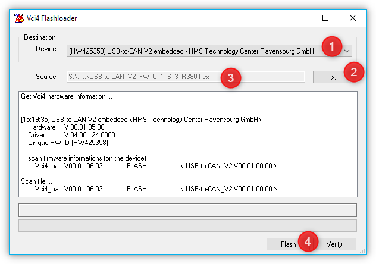
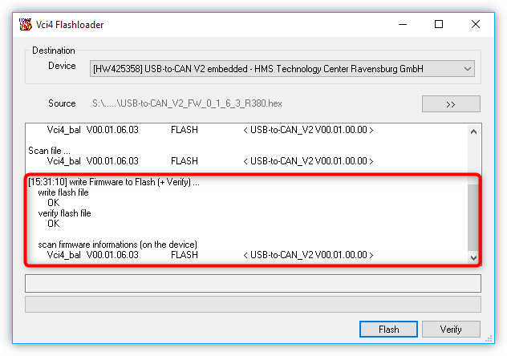

6. BASE 120 / BASE 600 Firmware Update
6.1. Preparation
Connect your BASE module to your PC. Start the software Vci3floadGui or
Vci4floadGui via Windows Explorer. You will find the software in
C:\Program Files\IXXAT\3.5 or C:\Program Files\HMS\IXXAT VCI 4.0 after
the installation of the QmixElements or Nemesys User Interface software
(see figure below).
The software will show you the detected USB-to-CAN interface. If the software does not detect any USB-to-CAN interface then please try to connect your BASE module to another USB interface of your PC.
You only need to do an update, if you have a V2 device, that means, if you have an USB-to-CAN V2 embedded or an USB-to-CAN V2 compact. If you do not have a V2 device, then you are finished now.
6.2. Update procedure
An USB-to-CAN V2 device should appear in the Device field ❶ of the Flashloader window.
Click the >>` button ❷ to select the firmware (e.g.
USB-to-CAN_V2_FW_0_1_6_3_R380.hex). You will find the latest firmware
here:
https://CETONI.de/software-downloads/
Attention
Do not interrupt the process while the flash procedure is running!
Now click the Flash button to start the update process ❹. Wait for the process to complete and then click Verify. If the verification succeeds with an OK message (see Figure below) the update process is complete and your device has been updated successfully.
